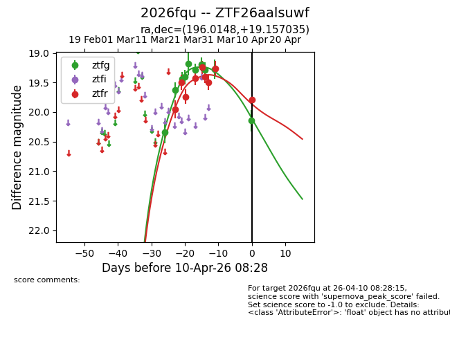
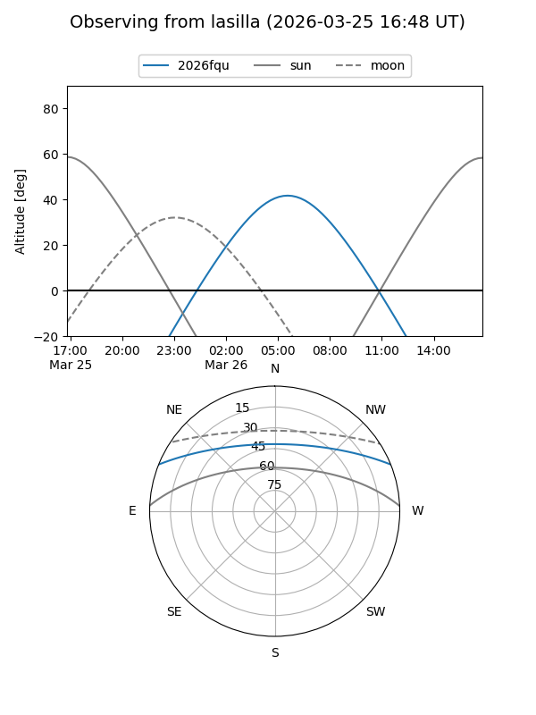
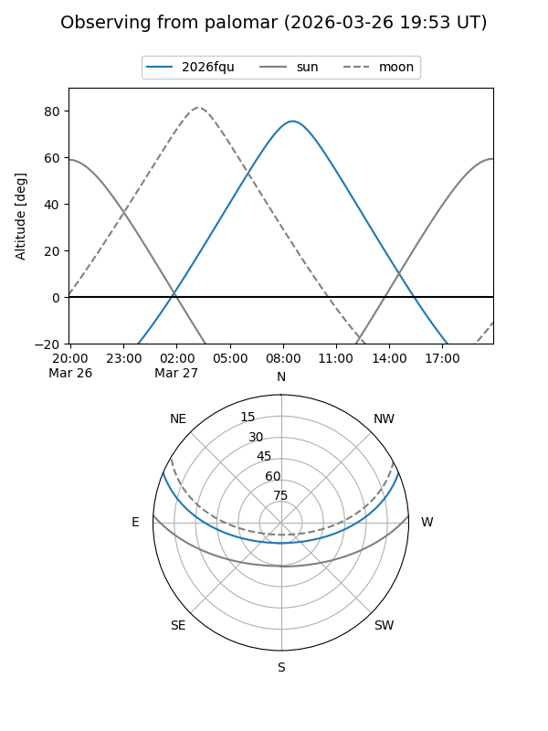
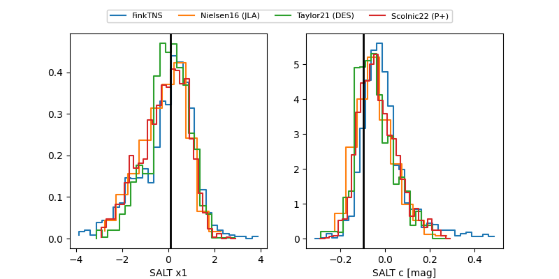

2026fqu
Target 2026fqu at 2026-04-10 08:35
Aliases and brokers:
FINK: link
Lasair: link
ALeRCE: link
TNS: link
YSE: link
alt names
ZTF26aalsuwf (ztf,fink_ztf)
2026fqu (tns,yse)
Coordinates:
equatorial (ra, dec) = 196.0148,+19.15703
equatorial (HMS+DMS) = 13:04:03.56,+19:09:25.33
galactic (l, b) = (323.5740,+81.51842)
Flags:
Photometry:
last ztfg=20.14, ztfr=19.79
10 ztfg, 9 ztfr detections
Lightcurve

Visibility


Additional plots
